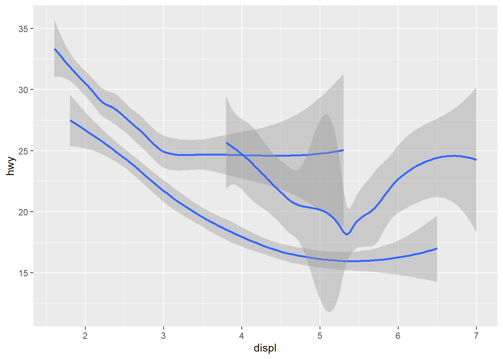

3 Transformaciones
3.1 Datos
Vamos a trabajar con el data.frame nycflights13::flights. Una vez más ten en cuanta los “conflictos” y asegúrate de usar la función correcta (paquete_correcto::fun_repetida(...)).
## ── Attaching core tidyverse packages ──────────────────────── tidyverse 2.0.0 ──
## ✔ dplyr 1.1.2 ✔ readr 2.1.4
## ✔ forcats 1.0.0 ✔ stringr 1.5.0
## ✔ ggplot2 3.4.2 ✔ tibble 3.2.1
## ✔ lubridate 1.9.2 ✔ tidyr 1.3.0
## ✔ purrr 1.0.1
## ── Conflicts ────────────────────────────────────────── tidyverse_conflicts() ──
## ✖ dplyr::filter() masks stats::filter()
## ✖ dplyr::lag() masks stats::lag()
## ℹ Use the conflicted package (<http://conflicted.r-lib.org/>) to force all conflicts to become errors## # A tibble: 336,776 × 19
## year month day dep_time sched_dep_time dep_delay arr_time sched_arr_time
## <int> <int> <int> <int> <int> <dbl> <int> <int>
## 1 2013 1 1 517 515 2 830 819
## 2 2013 1 1 533 529 4 850 830
## 3 2013 1 1 542 540 2 923 850
## 4 2013 1 1 544 545 -1 1004 1022
## 5 2013 1 1 554 600 -6 812 837
## 6 2013 1 1 554 558 -4 740 728
## 7 2013 1 1 555 600 -5 913 854
## 8 2013 1 1 557 600 -3 709 723
## 9 2013 1 1 557 600 -3 838 846
## 10 2013 1 1 558 600 -2 753 745
## # ℹ 336,766 more rows
## # ℹ 11 more variables: arr_delay <dbl>, carrier <chr>, flight <int>,
## # tailnum <chr>, origin <chr>, dest <chr>, air_time <dbl>, distance <dbl>,
## # hour <dbl>, minute <dbl>, time_hour <dttm>3.2 El paquete dplyr
El objetivo ahora es asimilar las transformaciones de datos que ofrece dplyr:
- Filtrar observaciones (filas) con
filter(), - Reordenar observaciones (filas) con
arrange(), - Seleccionar variables (columnas) con
select(), - Crear nuevas variables (columnas) aplicando transformaciones (funciones) a las ya existentes con
mutate(), - Resumir la información de muchos valores con
summarise(), - … puede ser usado con
group_by()que agrupa las observaciones de acuerdo a cierta variable categórica.
3.2.1 Filtrar filas
Con filter() podemos filtrar/extraer las observaciones de acuerdo a características de una o varias variables, usando los operadores de comparación lógicos. Por ejemplo, para filtrar todos los vuelos ocurridos en los 1eros de Enero:
## # A tibble: 842 × 19
## year month day dep_time sched_dep_time dep_delay arr_time sched_arr_time
## <int> <int> <int> <int> <int> <dbl> <int> <int>
## 1 2013 1 1 517 515 2 830 819
## 2 2013 1 1 533 529 4 850 830
## 3 2013 1 1 542 540 2 923 850
## 4 2013 1 1 544 545 -1 1004 1022
## 5 2013 1 1 554 600 -6 812 837
## 6 2013 1 1 554 558 -4 740 728
## 7 2013 1 1 555 600 -5 913 854
## 8 2013 1 1 557 600 -3 709 723
## 9 2013 1 1 557 600 -3 838 846
## 10 2013 1 1 558 600 -2 753 745
## # ℹ 832 more rows
## # ℹ 11 more variables: arr_delay <dbl>, carrier <chr>, flight <int>,
## # tailnum <chr>, origin <chr>, dest <chr>, air_time <dbl>, distance <dbl>,
## # hour <dbl>, minute <dbl>, time_hour <dttm>Todos los vuelos de Enero a Febrero:
# nivel: "beginner"
flights_1_2 <- filter(flights, month == 1 | month == 2)
# nivel: "beginner" adelantado
flights_1_2 <- filter(flights, month %in% c(1, 2))
# nivel: "tidyverser" :)
flights_1_2 <- flights %>%
filter(month %in% c(1, 2))Vuelos que no se han retrasado más de 2hrs (tanto salida como llegada):
Algo interesante de filter() es que deja fuera directamente los NAs.
3.2.1.1 Ejercicios:
Encontrar los vuelos (asignar a una nueva variable que nombres apropiadamente):
- Se atrasaron más de 2hrs en llegar
- Volaron a Houston (IAH or HOU)
- Fueron operados por “United”, “American” o “Deta”
- Salieron en el verano (Julio, Agosto y Septiembre)
- Llegaron más de 2hrs tarde, pero no salieron tarde
- Se retrasaron al menos 1hr, pero compesaron 30min en vuelo
- Salieron entre medianoche y 6am (inclusive)
Busca la ayuda de
between()e intenta simplificar un poco tus respuestas al ejercicio anterior.¿Cuántos vuelos no tienen información sobre
dep_time? ¿Alguna otra variable tiene datos perdidos? ¿Qué crees que representan en cada caso?¿Qué crees de los siguientes resultados?
## [1] 1## [1] TRUE## [1] FALSE## [1] NA3.2.2 Rerodenar filas
Con arrange() podemos ordenar las observaciones (filas) de nuestros data frame, de acuerdo a una o más variables (columnas). En general, la ordenación se hará de acuerdo a la primera variable y el resto se usará en caso de “empate”. Por defecto, la ordenación es ascendente y los NA se colocan al final:
## # A tibble: 7 × 19
## year month day dep_time sched_dep_time dep_delay arr_time sched_arr_time
## <int> <int> <int> <int> <int> <dbl> <int> <int>
## 1 2013 1 1 517 515 2 830 819
## 2 2013 1 1 533 529 4 850 830
## 3 2013 1 1 542 540 2 923 850
## 4 2013 1 1 544 545 -1 1004 1022
## 5 2013 1 1 554 600 -6 812 837
## 6 2013 1 1 554 558 -4 740 728
## 7 2013 1 1 555 600 -5 913 854
## # ℹ 11 more variables: arr_delay <dbl>, carrier <chr>, flight <int>,
## # tailnum <chr>, origin <chr>, dest <chr>, air_time <dbl>, distance <dbl>,
## # hour <dbl>, minute <dbl>, time_hour <dttm>## # A tibble: 7 × 19
## year month day dep_time sched_dep_time dep_delay arr_time sched_arr_time
## <int> <int> <int> <int> <int> <dbl> <int> <int>
## 1 2013 12 31 NA 1430 NA NA 1750
## 2 2013 12 31 NA 855 NA NA 1142
## 3 2013 12 31 NA 705 NA NA 931
## 4 2013 12 31 NA 825 NA NA 1029
## 5 2013 12 31 NA 1615 NA NA 1800
## 6 2013 12 31 NA 600 NA NA 735
## 7 2013 12 31 NA 830 NA NA 1154
## # ℹ 11 more variables: arr_delay <dbl>, carrier <chr>, flight <int>,
## # tailnum <chr>, origin <chr>, dest <chr>, air_time <dbl>, distance <dbl>,
## # hour <dbl>, minute <dbl>, time_hour <dttm>Orden descendente, de acuerdo a dep_time:
## # A tibble: 7 × 19
## year month day dep_time sched_dep_time dep_delay arr_time sched_arr_time
## <int> <int> <int> <int> <int> <dbl> <int> <int>
## 1 2013 10 30 2400 2359 1 327 337
## 2 2013 11 27 2400 2359 1 515 445
## 3 2013 12 5 2400 2359 1 427 440
## 4 2013 12 9 2400 2359 1 432 440
## 5 2013 12 9 2400 2250 70 59 2356
## 6 2013 12 13 2400 2359 1 432 440
## 7 2013 12 19 2400 2359 1 434 440
## # ℹ 11 more variables: arr_delay <dbl>, carrier <chr>, flight <int>,
## # tailnum <chr>, origin <chr>, dest <chr>, air_time <dbl>, distance <dbl>,
## # hour <dbl>, minute <dbl>, time_hour <dttm>3.2.2.1 Ejercicios
Si por defecto
arrange()coloca losNAal final, ¿hay alguna forma de colocarlos al inicio? Hint: usais.na().Ordena los vuelos para encontrar los que más se retrasaron. Encuentra los que despegaron antes.
Ordena los vuelos de forma tal que permita encontrar los de mayor velocidad.
¿Cuáles son los vuelos que mayor (menor) distancia recorrieron?
3.2.3 Seleccionar variables
Con select() podemos justamente seleccionar variables (columnas) de interés.
## # A tibble: 5 × 3
## year month day
## <int> <int> <int>
## 1 2013 1 1
## 2 2013 1 1
## 3 2013 1 1
## 4 2013 1 1
## 5 2013 1 1# seleccionamos todas las columnas desde año (year) hasta día (day),
# ambas inclusive
flights %>%
select(year:day) %>%
head(5)## # A tibble: 5 × 3
## year month day
## <int> <int> <int>
## 1 2013 1 1
## 2 2013 1 1
## 3 2013 1 1
## 4 2013 1 1
## 5 2013 1 1# seleccionamos todas las columnas excepto las que van desde año (year)
# hasta día (day), ambas inclusive
flights %>%
select(-(year:day)) %>%
head(5)## # A tibble: 5 × 16
## dep_time sched_dep_time dep_delay arr_time sched_arr_time arr_delay carrier
## <int> <int> <dbl> <int> <int> <dbl> <chr>
## 1 517 515 2 830 819 11 UA
## 2 533 529 4 850 830 20 UA
## 3 542 540 2 923 850 33 AA
## 4 544 545 -1 1004 1022 -18 B6
## 5 554 600 -6 812 837 -25 DL
## # ℹ 9 more variables: flight <int>, tailnum <chr>, origin <chr>, dest <chr>,
## # air_time <dbl>, distance <dbl>, hour <dbl>, minute <dbl>, time_hour <dttm>También dispondremos de las “funciones de ayuda a la selección”:
starts_with("abc"): columnas que empiezan en “abc”.ends_with("xyz"): columnas que terminan en “xyz”.contains("ijk"): columnas que contienen la expresión “ijk”.matches(""[pt]xyz""): selecciona variables que coinciden con una expresión regular.num_range("x", 1:3): equivalente a seleccionr:paste0("x", 1:3).everything(): selecciona todas las variables. Útil si deseamos poner algunas columnas de interés al incio, porqueselect()no incluye columnas repetidas:
## # A tibble: 5 × 19
## time_hour air_time year month day dep_time sched_dep_time
## <dttm> <dbl> <int> <int> <int> <int> <int>
## 1 2013-01-01 05:00:00 227 2013 1 1 517 515
## 2 2013-01-01 05:00:00 227 2013 1 1 533 529
## 3 2013-01-01 05:00:00 160 2013 1 1 542 540
## 4 2013-01-01 05:00:00 183 2013 1 1 544 545
## 5 2013-01-01 06:00:00 116 2013 1 1 554 600
## # ℹ 12 more variables: dep_delay <dbl>, arr_time <int>, sched_arr_time <int>,
## # arr_delay <dbl>, carrier <chr>, flight <int>, tailnum <chr>, origin <chr>,
## # dest <chr>, distance <dbl>, hour <dbl>, minute <dbl>3.2.3.1 Ejercicios
¿Cuál será la forma más corta de seleccionar:
dep_time,dep_delay,arr_time,arr_delay?Queremos seleccionar las variables indicadas en el vector
vars. Hint: usarany_of.
- ¿QUé pasa con el siguiente código? ¿Debería seleccionar todas esas variables? Hint: mirar el argumento
ignore.case.
## # A tibble: 336,776 × 6
## dep_time sched_dep_time arr_time sched_arr_time air_time time_hour
## <int> <int> <int> <int> <dbl> <dttm>
## 1 517 515 830 819 227 2013-01-01 05:00:00
## 2 533 529 850 830 227 2013-01-01 05:00:00
## 3 542 540 923 850 160 2013-01-01 05:00:00
## 4 544 545 1004 1022 183 2013-01-01 05:00:00
## 5 554 600 812 837 116 2013-01-01 06:00:00
## 6 554 558 740 728 150 2013-01-01 05:00:00
## 7 555 600 913 854 158 2013-01-01 06:00:00
## 8 557 600 709 723 53 2013-01-01 06:00:00
## 9 557 600 838 846 140 2013-01-01 06:00:00
## 10 558 600 753 745 138 2013-01-01 06:00:00
## # ℹ 336,766 more rows3.2.4 Crear nuevas variables
Con mutate() podemos añadir nuevas columnas a nuestro data frame. Estas columnas se crean al aplicar las funciones que conocemos (operaciones aritméticas, lags, acumulados, etc.) a las columnas ya existentes.
flights %>%
mutate(gain = dep_delay - arr_delay,
speed = distance / air_time * 60,
hours = air_time / 60,
gain_per_hour = gain / hours) %>% # ¡usamos las columnas nuevas!
select(gain, speed, hours, gain_per_hour, everything()) %>%
head(5)## # A tibble: 5 × 23
## gain speed hours gain_per_hour year month day dep_time sched_dep_time
## <dbl> <dbl> <dbl> <dbl> <int> <int> <int> <int> <int>
## 1 -9 370. 3.78 -2.38 2013 1 1 517 515
## 2 -16 374. 3.78 -4.23 2013 1 1 533 529
## 3 -31 408. 2.67 -11.6 2013 1 1 542 540
## 4 17 517. 3.05 5.57 2013 1 1 544 545
## 5 19 394. 1.93 9.83 2013 1 1 554 600
## # ℹ 14 more variables: dep_delay <dbl>, arr_time <int>, sched_arr_time <int>,
## # arr_delay <dbl>, carrier <chr>, flight <int>, tailnum <chr>, origin <chr>,
## # dest <chr>, air_time <dbl>, distance <dbl>, hour <dbl>, minute <dbl>,
## # time_hour <dttm>Si solamente nos interesan las nuevas columnas que hemos creado, usamos transmute():
flights %>%
transmute(gain = dep_delay - arr_delay,
speed = distance / air_time * 60,
hours = air_time / 60,
gain_per_hour = gain / hours) %>% # ¡usamos las columnas nuevas!
head(5)## # A tibble: 5 × 4
## gain speed hours gain_per_hour
## <dbl> <dbl> <dbl> <dbl>
## 1 -9 370. 3.78 -2.38
## 2 -16 374. 3.78 -4.23
## 3 -31 408. 2.67 -11.6
## 4 17 517. 3.05 5.57
## 5 19 394. 1.93 9.833.2.4.1 Ejercicios
15. Convertir dep_time y sched_dep_time a minutos transcurridos desde la medianoche. Notar que son variables importantes pero con un formato difícil de trabajar (es complicado hacer operaciones aritméticas con ellos). Sigue las siguientes directrices:
- Una observación de
dep_timesería por ejemplo2021que indica las 20:21 hrs (8:21 pm). - Para obtener las horas transcurridas desde la medianoche hasta las 20:21 hrs tendremos que usar la división entera
2021 %/% 100 == 20. Luego es fácil obtener los minutos multiplicando por 60. - Los 21 minutos restantes podemos obtenerlos con el resto de la división
2021 %% 100 == 21… no olvides sumar ambas cantidades - Finalmente, tendrás que lidiar con la medianoche, representada con
2400. Primero, comprueba a cuántos minutos corresponde según nuestras operaciones. Luego, considera calcular el resto de la división por esta cantidad de minutos (siempre quex <= yy ambos sean positivos, tendremosx %% y == 0).
16. Compara air_time con arr_time - dep_time. ¿Es necesaria hacer la transformación del ejercicio anterior? ¿Puedes encontrar en cuántos casos air_time != arr_time - dep_time? ¿Por qué pasa esto, no deberíamos obtener que el tiempo de vuelo es la diferencia entre la llegada y la salida?
17. ¿Qué relación crees que habrá entre dep_time, sched_dep_time y dep_delay? Encuentra el número de observaciones en las que no se cumple tu hipótesis.
18. Encuentra los 10 vuelos que más se retrasaron.
3.2.5 Resumir variables
Con summarise() logramos “resumir” la información de determinadas variables, de acuerdo a cierta función que fijemos (media, mediana, IQR, etc.). Debes tener en cuenta que esto “colapsa” el data frame incial.
## # A tibble: 1 × 1
## delay
## <dbl>
## 1 12.6## # A tibble: 1 × 1
## delay
## <dbl>
## 1 NAAhora, lo verdaderamente interesante de esta función es usarla para “observaciones agrupadas” con group_by(). Por ejemplo, queremos saber la media de los retrasos por mes y año:
## `summarise()` has grouped output by 'year'. You can override using the
## `.groups` argument.## # A tibble: 12 × 3
## # Groups: year [1]
## year month delay
## <int> <int> <dbl>
## 1 2013 1 10.0
## 2 2013 2 10.8
## 3 2013 3 13.2
## 4 2013 4 13.9
## 5 2013 5 13.0
## 6 2013 6 20.8
## 7 2013 7 21.7
## 8 2013 8 12.6
## 9 2013 9 6.72
## 10 2013 10 6.24
## 11 2013 11 5.44
## 12 2013 12 16.6Cambiando la variable de agrupamiento (debe ser categórica) podemos obtener la media (o cualqiuer otro estadístico que deseemos) para cada categoría. Veamos un ejemplo en combinación con ggplot:
delays <- flights %>%
group_by(dest) %>%
summarise(
count = n(),
dist = mean(distance, na.rm = TRUE),
delay = mean(arr_delay, na.rm = TRUE)
) %>%
filter(count > 20, dest != "HNL")
ggplot(data = delays, mapping = aes(x = dist, y = delay)) +
geom_point(aes(size = count), alpha = 1/3) +
geom_smooth(se = FALSE)## `geom_smooth()` using method = 'loess' and formula = 'y ~ x'
Estamos agrupando por destino (dest) y luego contamos la cantidad de vuelos que van a cada destino (count), la distancia media (dist) entre los aeropuertos de origen y el destino, y el retraso medio en minutos de la llegada (delay). Habrás notado que filtramos los destinos con pocas visitas (pueden ser outliers) y Honolulu (está muy lejos de casi cualquier aeropuerto), para eliminar un poco de “ruido” en nuestro plot (intenta omitir el filtrado y notarás que es más difícil la interpretación). De este gráfico entendemos que mientras más cercano el destino, mayor probabilidad de retraso. Sin embargo, los vuelos a destinos lejanos parecen presentar menos retrasos (tal vez en el aire puedan compensar el retraso).
Otros ejemplos usando varias variables de agrupamiento:
## `summarise()` has grouped output by 'year', 'month'. You can override using the
## `.groups` argument.## # A tibble: 365 × 4
## # Groups: year, month [12]
## year month day flights
## <int> <int> <int> <int>
## 1 2013 1 1 842
## 2 2013 1 2 943
## 3 2013 1 3 914
## 4 2013 1 4 915
## 5 2013 1 5 720
## 6 2013 1 6 832
## 7 2013 1 7 933
## 8 2013 1 8 899
## 9 2013 1 9 902
## 10 2013 1 10 932
## # ℹ 355 more rows## `summarise()` has grouped output by 'year'. You can override using the
## `.groups` argument.## # A tibble: 12 × 3
## # Groups: year [1]
## year month flights
## <int> <int> <int>
## 1 2013 1 27004
## 2 2013 2 24951
## 3 2013 3 28834
## 4 2013 4 28330
## 5 2013 5 28796
## 6 2013 6 28243
## 7 2013 7 29425
## 8 2013 8 29327
## 9 2013 9 27574
## 10 2013 10 28889
## 11 2013 11 27268
## 12 2013 12 28135## # A tibble: 1 × 2
## year flights
## <int> <int>
## 1 2013 336776También, si deseas deshacer la agrupación, por ejemplo, si quieres contar el total de vuelos sin agrupar:
daily %>%
ungroup() %>% # deshacemoos la agrupación por fecha
summarise(flights = n()) # tooooooodos los vuelos :)## # A tibble: 1 × 1
## flights
## <int>
## 1 3367763.2.5.1 Ejercicios
19. Mira el número de vuelos cancelados por día e intenta encontrar algún patrón. ¿Está relacionada la proporción de vuelos cancelados con el retraso medio? Hint:
- Crear una nueva variable/columna que indique si un vuelo se ha cancelado o no (definiremos
cancelado = (is.na(arr_delay) | is.na(dep_delay))), - No olvides agrupar (año, mes, día ) y luego cuenta el número total de vuelos y el número de cancelados,
- Haz un plot de cancelados vs. número de vuelos e intena describir posibles patrones,
- Para responder la pregunta tendrás que crear una variable
prop_cancelados(media) y la media dedep_delayoarr_delay, - Realiza los diagramas de dispersión correspondientes e intenta describir posibles patrones.
- ¿A qué hora del día (
hour) deberías viajar si quieres evitar retrasos tanto como sea posible? Hints:
- Agrupar por la variable que consideres oportuna (vamos que es
hour), - Resume el tiempo que ha demorado el vuelo (¿es más importante
arr_delayodep_delay?), - Reordena adecuadamente.